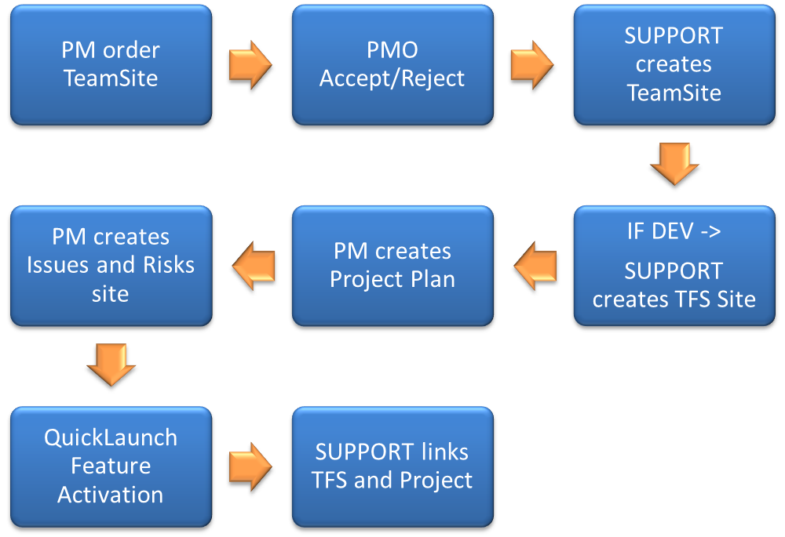

Marie Kristin Johansen
23. November 2011
Demands
Information Planning Document Templates UserStories
Estimates Resources Costs Collaboration Reporting
Documents Development Scheduling BurnDown Charts
Project Processes Budgeting KPI's Tasks Workflows
Teams Time Accounting Source Control Risks
S-curve

The
Team Foundation Server 2010
Developer
Information Planning Document Templates UserStories
Estimates Resources Costs Collaboration Reporting
Documents Development Scheduling BurnDown Charts
Project Processes Budgeting KPI's Tasks Workflows
Teams Time Accounting Source Control Risks
S-curve
The
Project Server 2010
Project Manager
Information Planning Document Templates UserStories
Estimates Resources Costs Collaboration Reporting
Documents Development Scheduling BurnDown Charts
Project Processes Budgeting KPI's Tasks Workflows
Teams Time Accounting Source Control Risks
S-curve
The
SharePoint Server 2010
Stakeholder
Information Planning Document Templates UserStories
Estimates Resources Costs Collaboration Reporting
Documents Development Scheduling BurnDown Charts
Project Processes Budgeting KPI's Tasks Workflows
Teams Time Accounting Source Control Risks
S-curve
Integrations
Demo
Demo
Demo

ProjectID Web Service
Navigation Feature Receiver
Issues and Risks Web Template
Ribbon Redirect
Issues and Risks Web Parts
Customizations
Demo
Demo
Demo
http://infotorg/team/prosjekt/prosjektportal2/default.aspx

Challenges:
- Project Server Uninstall
- Project Server and Claims Authentication
- Project Server Host Header and TFS Integration
- Manual operations in TFS Sync
End
Adaption
User
marie kristin johansen
mariekj@microsoft.com